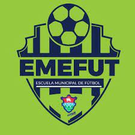

Biografia
Hola!, hoy te contare en menos de 5 minutos "El Tunel De Mi Vida", basicamente es mi biografía, bueno mi nombre es Juan Carlos Avila Flores mi tunel de
vida empezo el dia 9 de mayo del año 2005
pues ese fue el dia que yo nací, desde pequeño demostre gran interes en los videojuegos lo cual es una de mis
grandes pasiones, ya a la edad de 5 años le ganaba a mi padre en
la Nintendo 64, luego a la edad de 7 años entre porfin a estudiar, en un colegio llamado "Mi Villa Alegre" y no
voy a meentir fueron mis peores años, desde pequeño sufrí bullying
y por lo cual yo mee encerraba todo el dia en mi cuarto para poder jugar en mi plays station 3, mis padres al
darse cuenta de esto me metiero a hacer deporte en una academia llamada "Emefut",
esta academia era de futbol y a la edad de 8 años nace otra de mis grandes pasiones la cual es este bello
deporte, mi vida cambio a la edad de 9 años cuando un dia sin mucho que hacer encontre
unos videos de una competncia de rap llamada "Quinto Escalon", y desde ese momento empeze a improvisar en mi
cuarto y alli nacio otra de mis grandes pasiones que es la musica, desde esa edad empeze
a escribir mis primeros temas musicales.
Despues de una primaria muy dificil sin muchos amigos entro a estudiar mi ciclo de nivel basico a un instituto
llamado "Dr. Carlos Martinez Duran" y a diferencia de la primaria aqui si pase los mejores años
de mi vida sin ningun tipo de dudas, aqui conci muchos amigos, todo era perfecto por fin era un chico con amigos
y querido por muchos, pero si hablamos de amigos nos tenemos que ir al dia
17 de septiembre del año 2017, ese dia conci a mis mejores amigos, que ustedes se imaginaran que eran mis
compañeros de colegio o algo asi pero no, los conoci gracias a los viedojuegos,
ese dia conoci a mis 6 mejores amigos, y desde ese dia hemos jugado y hablado todos los dias sin falta alguna,
con ellos eh pasado cumpleaños, navidades y años nuevos llenos de felicidad, y si se lo preguntan, si ya nos
conocimos en persona, digo por las dudas.
Todo iba bien hasta el año 2020 que fue cuando llego el coronavirus, esta enfermedad que lo arruino todo, empece
con clases virtuales y nadie podia salir de sus casas.
Bueno y en el año 2021 entro a mi ultimo ciclo escolar, entre a diversificado mas especificamente al colegio
llamado "Kinal", este siempre fue el colegio de mis sueños, unas instalaciones preciosas y
un nivel de enseñanza muy alto, el unico problema eran las carreras que tenian para elegir, siendo sincero
queria estudiar mercadotecnia en publicidad, o ciencias de la comunicacion, pero mis padres no me dejaron,
asi que obte por la carrera de "Informatica" una carrera que no me gusta ni me disgusta, y aun estoy cursandola,
aqui conoci a muy buenas personas y buenos amigos,
y bueno si me preguntaras ¿Qué planes tengo para el futuro? te responderia que segui mi sueño de ser
cantante/artista, siento que tengo mucho talento pero asi tambien se que es muy dificl triunfar en este pais,
por eso mi meta es que antes que cumpla 20 años emigrar hacia Estados Unidos, ya que aparte de que tendria mas
facilidades allá tambien vivir alli siempre a sido mi sueño desde niño,
ya que me encanta su cultura y todo lo relacionado, quisiera vivir en New York o minimo ir de paseo, tengo que
cumplirlo ya que se lo prometi a una vieja amiga.
y bueno eso seria toda mi historia.
MIS METAS PARA ESTE AÑO
Mis metas para este año son muchas la verdad me gustaria cumplir todas, para que no se le haga muy aburrido las voy a presentar de la siguiente manera:

Cumplir con mis Notas
Este año uno de mis propositos es sacar las mejores notas posibles para que de esa manera pueda agradecer el esfuerzo que mis padres hacen dia con dia conmigo.

Conseguir empresa para mis practicas
Quiero conseguir una buena empresa para poder aprender y practicar mas este ambito laboral.

Quedarme trabajando donde hice mis Practicas
Tengo la esperanza de que tal vez pueda quedarme trabajando, asi podria pagarme la Universidad
Graduarme
Esta es una de mis mayores metas la cual es graduarme de esta carrera que me a costado como no se imaginan.
Entrar a la Universidad
Siendo sinceros aun no se a que universidad entraré, tampoco a que carrera. Solo se que si quiero estudiar en la Universidad

Crecer Deportivamente
Quiero crecer deportivamente en mi escuela de futbol, ya que este año es mi ultimo año con ellos quisiera cerrar este ciclo hermoso ganado el campeonato